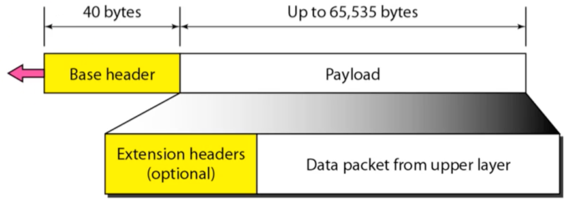

충남대학교 컴퓨터공학과 김상하 교수님의 "컴퓨터 네트워크" 강의를 필기한 내용입니다.
강의를 듣고 필기한 내용이기에, 다소 잘못된 부분과 구어적 표현 이 포함되어 있을 수 있습니다.
IP의 버전들
- v4가 나온 이후 v5와 v6가 나왔지만
- v5의 경우에는 OSI 7 Layer를 도입한 실험적인 모델이었고
- v6의 경우에는 v4에 밀려 잘 사용되지 않는댄다
Network layer 작동과정 다른 예시

- 위의 예시에서 주의해야 할 점은 Processing다음에 이어지는 패킷 구조에서 분홍색 박스이다
- 위의 그림은 조금 잘못되어있는데, Network layer에서는 IP header에 해당하는 앞부분의 회색 헤더만 붙이게 되고, Router table을 이용해 알아낸 어느 Interface (Network card)로 나가야되는지의 정보는 뒤에 footer로 붙이는 것이 아닌, datalink layer한테 함수의 argument로 전달해주게 된다

- 위의 그림은 host가 아닌 router의 작동원리에 대해 나타내는 것인데
- 일단 Router의 경우에는 main()함수가 Network layer이기 때문에 상위계층이 더 없다
- 그리고 마찬가지로 interface에 해당하는 저 분홍색 부분은 packet에 붙어서 하위 계층으로 전달되는 것이 아닌 argument의 형태로 전달된다
- 또한 하위계층에서 상위계층을 function call하는 것이 아닌 상위계층에서 하위계층을 function call하고, packet은 return statement를 통해 상위계층으로 전달된다는 것 주의하덤둥
Datagram
- 이전에 배웠다시피 IP의 경우에는 Datagram방식으로 packet switching을 한다
- 이건 왜냐하면 Internet의 경우에는 전 세계에 걸쳐 연결되어 있는데 packet이 지나가는 network의 환경이 일정하지 않을 수 있기 때문에(이것을 Heterogeneous network라고 한다) Connection을 만드는 것은 불가능하기 때문
IPv4
- TCP / IP protocol suite 가 인터넷인 거고 이걸 위한 패킷 전송 메커니즘이 IPv4인 것
- IPv4의 대표적인 특징은 다음과 같음
- Connectionless datagram protocol : 뭐 datagram방식을 이용한다는 소리고
- Unreliable, best-effort delivery service : 얘는 송신과정에서 에러가 날 수 있으나 최선을 다해 목적지까지 보내겠다는 뜻이다
- 즉, 에러의 여부는 중요하지 않고 목적지까지 도달하는게 목적인 셈
- 에러가 났을 경우 처리는 TCP에서 한다
IPv4 datagram format

- VER은 말그대로 IP버전을 말하는 것 - IPv4의 경우에는 4가 들어간다
- HLEN은 header length로, 4byte단위로 표현한다 - 위의 그림에서 한줄이 4byte이므로 저 한 줄이 몇개나 들어가있냐를 말하는 셈
- 보통 물리계층에서 4byte단위로 전송이 이루어지기 때문에 4byte단위로 표현함
- 그리고 중요한 것은 HLEN의 값은 무조건 5보다 커야 한다 - 즉, 헤더 길이가 20byte보다는 무조건 커야된다는 소리 - 이것보다 작은 경우에는 잘못된 것으로 판단하고 discard한다
- 이건 왜냐하면 위 그림에서 흰색으로 표현된 5개의 층은 무조건 있어야 되고 여기에 추가적으로 Option이 들어갈 수 있기 때문
- 만일 여기의 값이 8이어서 총 헤더의 길이가 32바이트가 된다면, 20바이트는 헤더에 꼭 필요하므로 나머지 12바이트가 Option의 길이가 되는 것이다
- Total Length는 헤더를 포함한 패킷 하나의 전체 길이를 나타냄
- 여기에 들어가는 값은 당연히 1바이트 단위이다 - 40이면 40바이트가 총 패킷의 길이가 되는 셈
- HLEN이란 Total length로 패킷 구조 도출해내는거 문제 나올거같다
- Protocol은 아래의 그림에서의 프로토콜을 나타냄

- 즉, 상위계층의 프로토콜 중에서 어떤 프로토콜로 전송되었나를 나타내는 필드인 것
- 딴건몰라도 6이 TCP인것 정도는 알고있으라
- ID, Flag, Fragmentation offset의 경우에는 fragmentation을 위한 필드인데
- 이것의 원리에 대해서는 설명하지 않고 fragmentation이 필요한 이유에 대해서만 좀 알고있으라
- fragmentation이 필요한 이유는 Datalink에서 회선의 종류에 따라 한번에 보낼 수 있는 데이터의 양이 정해지기 때문
- 만일 광섬유같은 신뢰성이 높은 회선이라면, 에러가 잘 나지 않기 때문에 많은 양의 데이터를 한번에 보낼 수 있지만, 신뢰성이 낮은 회선의 경우에는 적은 양의 데이터를 보내야 한다 - 왜냐하면 에러가 많이 나는 회선에서 많은 데이터를 보내게 되면 에러가 났을 경우 그 많은 데이터를 다시 보내야 하고, 결과적으로 많은 오버헤드가 발생하게 됨
- 따라서 회선에 따라 한번에 보낼 수 있는 데이터의 양이 정해지고, 만일 한번에 보낼 수 있는 데이터보다 더 많은 데이터가 들어오면 이것을 특정 크기로 잘라 여러번 송신하게 되는 것
- 실습시간에 MTU(Maximum Transfer Unit) 으로 1500을 설정한 것이 이러한 이유에서다 - Ethernet의 경우에는 1500byte가 MTU이고, 따라서 이것보다 더 큰 데이터가 들어오면 해당 크기로 잘라 여러번 보내게 되는 것
- 그리고 라우터에서 단편화된 패킷을 받으면 이것들을 전부 합친 다음 송신 회선의 MTU에 따라 새롭게 단편해 전송하게 된다 - 패킷을 잘라 송신하였으므로 수신할때는 이걸 다 합쳐야지 완성된 패킷이 되므로
- 위와 같은 Fragmentation을 해주기 위한 필드가 바로 ID, Flag, Fragmentation offset인 것
- Header checksum은 만일 상위 계층에서 Header에 대한 신뢰성 정보를 얻고싶을 때 사용한다 - Datalink에서 Error Detection / Correction처럼 IP에서도 Header에 한정해서 에러가 났는지 아닌지 확인하기 위한 용도
- 왜 Header에 대해서만 에러를 판정하냐면 Network 계층에서는 Error detection보다는 패킷 전달에 목적이 있는데 만일 송수신 주소에 에러가 있으면 잘못된 주소로 패킷이 전달되기 때문에 Header에 대해서면 체크를 하게 되는 것
- 하지만 IPv4에서는 잘 사용하지 않는 필드랜다
- Time to Live : 얘는 패킷이 네트워크에서 loop에 빠져서 계속 돌아다니거나 너무 먼 길을 돌아서 나중에 도착하는 것을 막기 위해 수명을 정해놓은 것이다
- 최대 255까지의 값을 설정하여 하나의 hop을 지날때마다 1씩 감소시키고, 이 값이 0이 되면 수명을 다한것으로 판단하여 폐기하게 되는 구조
Options

- No operation

- HLEN을 적을 때 4바이트 단위로 적고, 물리계층에서 데이터를 송수신할때도 4바이트씩 병렬적으로 송수신하기 때문에 옵션들도 4바이트의 배수가 되께 하기 위해 넣어주는 일종의 패딩
- 위의 그림처럼 7바이트의 옵션이 있으면 NO-OP를 하나 채워 8바이트를 만들어준다
- End of operation

- 얘도 비슷한 이유이다 - 어떠한 이유에서든 마지막에 1바이트가 빌때 Option의 길이를 4바이트의 배수가 되게 하기 위해 넣어주는 것
- Record Route : 패킷이 거처간 라우터들을 전부 기록한 옵션 - 어디에서 트래픽이 몰리는지 등을 체크하는데 도움이 된다
- Strict Source Route : Virtual circuit마냥 지나가야되는 Router를 전부 명확하게 명시해 해당 루트로 전송되게 하는 옵션
- Loose Source Route : 지나가야되는 Router를 명시하되 얘네들만 지나가는게 아니고 다른 라우터를 거쳐서 이 라우터만은 반드시 거쳐가야된다는 것을 명시하는 옵션
- Timestamp : 각각의 라우터를 지나가는데 걸린 프로세싱 시간 - 뭐 네트워크 관리 등을 하는데 중요한 정보가 된댄다
IPv6
- IPv6혹은 IPng이라는 것은 두가지의 장점이 있다
- 더 많은 주소 수용 가능 - 주소체계를 16바이트로 늘려 훨씬 더 많은 주소를 표현했고 따라서 IPv4에서의 2계층 구조(netid와 hostid)말고 더 계층을 세분화했댄다
- On-demand hop-to-hop routing option : 얘는 IPv4에서처럼 option이 있지만 패킷의 모든 옵션을 다 꺼내봐야하는 IPv4와는 달리, 내가 봐야 하는 패킷만 볼 수 있고 따라서 더욱 빠르게 라우팅이 일어나게 된다는 것이다

- 따라서 위처럼 반드시 가지고 있어야 하는 40byte - Base header와 추가적인 옵션 - Extension header으로 구성됨
IPv4와의 차이점

- IPv4에 비해 바뀐 것을 간략하게 보면
- HLEN필드는 사라졌다 - 헤더의 길이가 40바이트로 고정이므로
- Service type필드는 → Priority and Flow label필드로 변경되었고
- Total length필드는 → Payload length필드로 변경되었고
- TTL필드는 → Hop limit필드로 변경되고
- Protocol필드는 → Next header필드의 Next Header Code로 변경되어 하나의 패킷에 여러개의 protocol에 대한 data가 저장될 수 있게 했고
- Header checksum은 어차피 TCP같은 계층에서 수행하기 때문에 사라졌고
- Option필드는 → Extension header로 변경되었다더라
Extension header

- 위와 같은 옵션들이 있음
- 뭐 Pad1, PadN은 IPv4에서의 NO-OP나 End of OP같은 alignment을 맞춰주기 위한 헤더이고 - Pad1은 1바이트짜리 패딩, PadN은 n바이트짜리 패딩
- 이 중에서 Source routing만 간략하게 보면

- 위의 그림에서 검은색 굵은선 박스가 Source routing의 내용인데
- HELen은 뭐 Header extension length일거고
- 그 아래 Left는 앞으로 몇개의 라우터를 더 거쳐야 되는지를 의미한다
- 그리고 그 아래로 차례대로 가장 먼저 방문하게 되는 순서로 라우터릐 이름이 들어가게 된다
- 진행과정은 다음과 같다
- 패킷이 라우터에 도착하면 dst를 보고 자신이 맞는지 확인한다
- 자신이 아니라면 routing table을 이용해 다음 목적지를 설정하여 보내면 되고 - 즉, base header만 보고 안꺼내봐도 될거같은 헤더는 꺼내보지 않는다 이거야
- 만약 자신이 맞다면 그제서야 Source routing 에 있는 내용을 확인하게 된다
- 즉, Source routing에 있는 내용은 항상 꺼내볼 필요가 없고 dst가 자신이 맞을때만 꺼내보는 것
- 꺼내본 다음에는 자신의 주소를 Source routing에 적고 그 다음에 있는 라우터를 dst로 설정하여 송신하게 됨
- 위 그림에서 보면 I1에 도달할때까지는 Source routing의 내용을 참조하지 않다가 I1에 도달하면 그때 열어보게 된다
- 이후에는 I1를 Source routing에 적고 해당 위치에 있던 라우터를 dst로 하여 보내게 되는 것
- 그럼 그 다음 라우터에 도달할때까지는 Source routing을 열어보지 않는 것을 반복하게 되는 것

- 따라서 IPv6의 경우에는 위와 같은 헤더 구조를 갖게 되고
- Next header의 경우에는 다음과 같은 값을 가진다

- 일단 Next header는 Next header code를 통해 뒤이어 나오는 옵션이 어떤 옵션에 속하는지 알려준다
- Next header code는 그리고 IPv4에서의 Protocol field처럼 어떤 상위 프로토콜에서 전송되었나를 표현하는 수단이 되기도 한다
- 또한 Next header에는 다음 옵션에 대한 포인터가 저장되어 있어서 해당 헤더를 안봐도 되는 경우에 다음 옵션으로 손쉽게 넘어갈 수 있게 한다
- Next header의 작동과정은
- 일단 Destination address가 라우터 자신의 주소와 같으면 Next header들을 전부 꺼내본다
- 그리고 자신의 주소와 같지 않으면 Next header를 전부 꺼내보지 않고 필요한 Next header들만 꺼내보되
- 자신의 주소와 같지 않을 경우에 Hop-by-hop option이 설정되어있는 경우에는 Next header를 전부 꺼내보게 된다
- Hop-by-hop option이 모든 Next header들을 다 꺼내보라는 신호라고 생각하면 됨